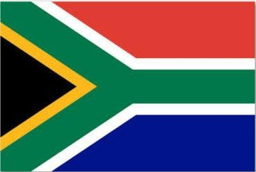

About Me
Welcome to my page! I'm Donald Mwana, and I'm excited to learn about web development.I'm Congolese, living currently in South Africa in the city of Pretoria. I'm 27 years old. I am a kind of person who is open minded always ready to listen to others and beside all that am a born again beliver in Christ Jesus
Pretoria, South Africa
Pretoria is one of the sweetest city i ever live, it's quiet and the people over here are kind they are always smiling. I'm looking forward to building dynamic web applications using HTML, CSS, and JavaScript.
